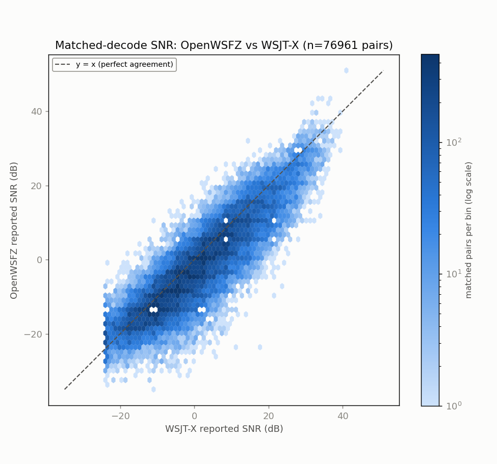
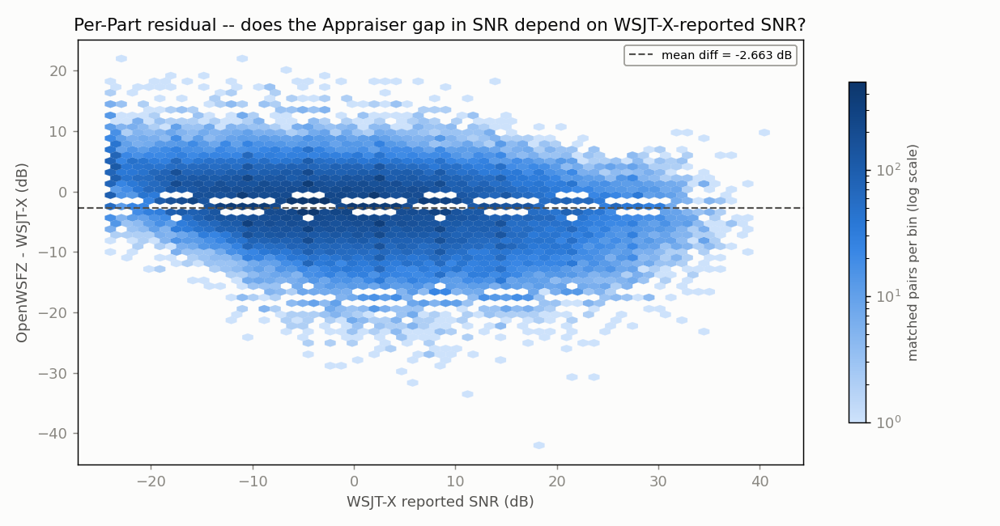
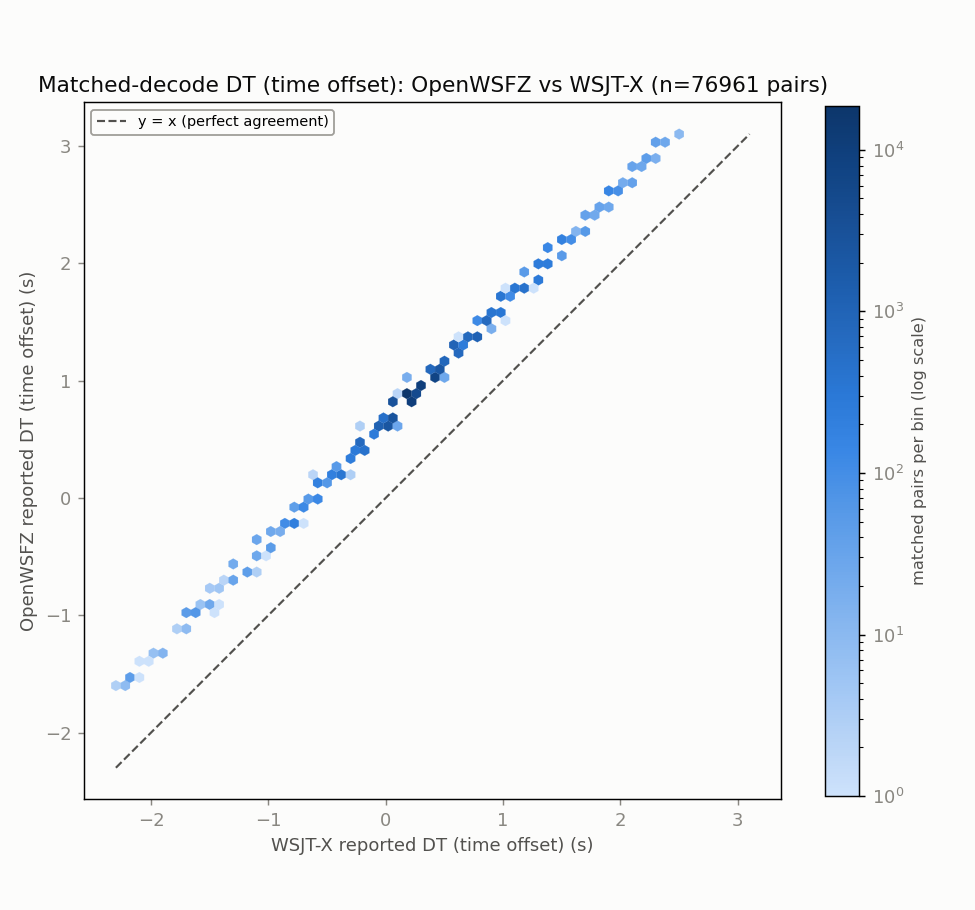
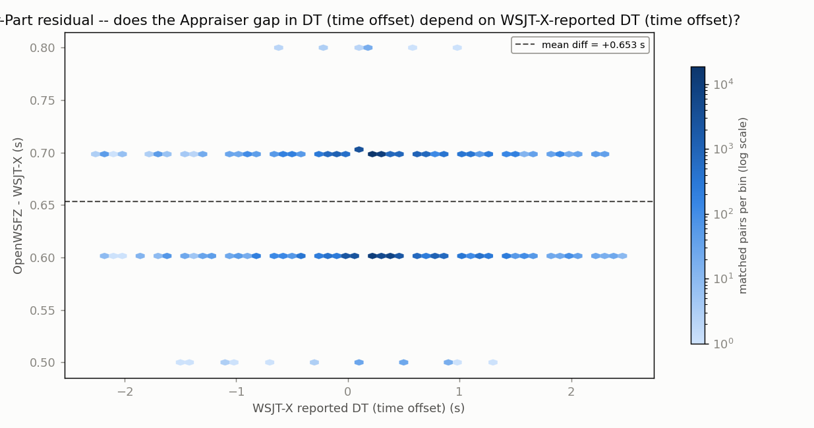
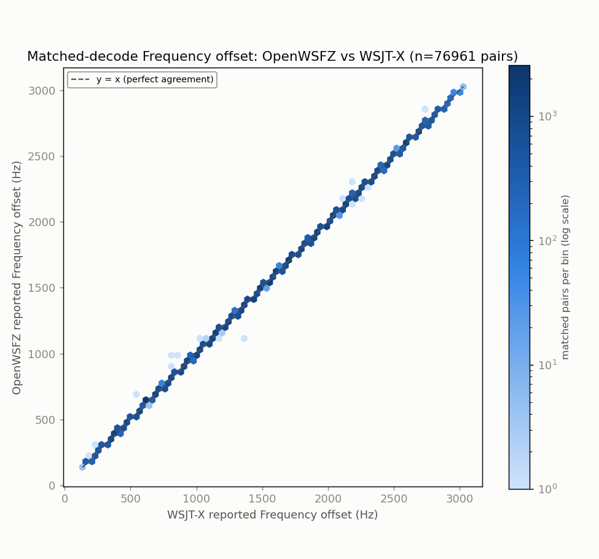
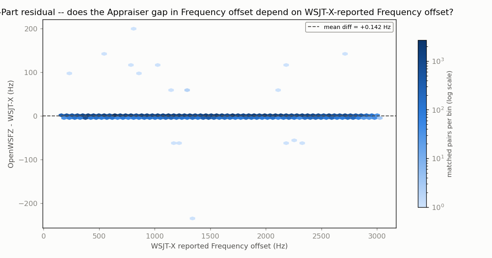

| appraiser | unique ts | on-grid | G | row | verdict |
|---|---|---|---|---|---|
| OpenWSFZ | 4852 | 4852 | 1.0000 | ROW 1 | PASS |
| WSJT-X | 4896 | 4896 | 1.0000 | ROW 1 | PASS |
Run: 2026-09-21/22 20m LIVE-GAP-MAP endurance run (OpenWSFZ decoding_improvement 84cac119 vs live WSJT-X, same audio feed, FT-991A)
Generated: 2026-09-22T18:52:41Z (date -u, HK-017)
Design: two-way ANOVA without replication (randomized complete block design) -- Part (matched decode instance) x Appraiser (OpenWSFZ, WSJT-X), run separately for each paired numeric response below (SNR, DT, frequency offset) over the identical matched Parts. See anova_common.py's module docstring for why this design applies to single-pass live data, and not the replicated design in qa/rr-study/harness/anova_compute.py.
Both appraisers' decode logs come from the same live session already on disk -- OpenWSFZ's own ALL.TXT and the real WSJT-X application's own ALL.TXT, both listening to the same physical radio feed throughout. No re-decoding was performed (contrast endurance_anova_jt9.py, used when there is no live third-party log to read).


| Source | SS | df | MS | F | P |
|---|---|---|---|---|---|
| Part | 18335853.7768 | 76960 | 238.2517 | 18.308 | 0.0000 |
| Appraiser | 272857.4479 | 1 | 272857.4479 | 20967.227 | 0.0000 |
| Residual (confounded with interaction, n=1/cell) | 1001520.5521 | 76960 | 13.0135 | ||
| Total | 19610231.7768 | 153921 |
Appraiser means (SNR, dB): OpenWSFZ -2.575 dB, WSJT-X 0.088 dB, grand mean -1.244 dB.


| Source | SS | df | MS | F | P |
|---|---|---|---|---|---|
| Part | 20008.2171 | 76960 | 0.2600 | 206.466 | 0.0000 |
| Appraiser | 16422.3218 | 1 | 16422.3218 | 13041848.555 | 0.0000 |
| Residual (confounded with interaction, n=1/cell) | 96.9082 | 76960 | 0.0013 | ||
| Total | 36527.4471 | 153921 |
Appraiser means (DT (time offset), s): OpenWSFZ 0.9377 s, WSJT-X 0.2844 s, grand mean 0.6111 s.


| Source | SS | df | MS | F | P |
|---|---|---|---|---|---|
| Part | 79877851976.7655 | 76960 | 1037913.8770 | 513816.414 | 0.0000 |
| Appraiser | 772.5928 | 1 | 772.5928 | 382.470 | 0.0000 |
| Residual (confounded with interaction, n=1/cell) | 155459.9072 | 76960 | 2.0200 | ||
| Total | 79878008209.2655 | 153921 |
Appraiser means (Frequency offset, Hz): OpenWSFZ 1486.6 Hz, WSJT-X 1486.5 Hz, grand mean 1486.5 Hz.
With one observation per Part x Appraiser cell -- a live signal happens once -- the interaction term and the residual/error term are mathematically confounded (standard property of an unreplicated factorial design), for every response above. Each table can say whether the two appraisers' mean value differs after removing part-to-part variation (the Appraiser row); none of them can separately test whether that difference itself varies signal-to-signal.
Cross-run comparison and interpretation of these numbers is Architect/Captain territory, not this module's.
1 standardised run(s). G is the grid-alignment gate (the lower of the two appraisers', i.e. the binding one; ROW 1 PASS >= 0.99). Ref. is the second appraiser: live WSJT-X on the same feed, or an offline jt9 -d 3 re-decode -- offline rows are marked non-comparable (HK-031: jt9 -d 3 offline is not a valid reference decoder) and must not be pooled or compared against live-WSJT-X rows. Never pool nhard 60 and nhard 40 runs together -- read the nhard column before comparing any two rows. Footnote numbering runs in table order, first-needed.
| Date | Band | Hours | DLL SHA (short) | Shim | nhard | Ref. | Radio chain | G | Matched pairs | SNR gap (dB) | DT gap (s) |
|---|---|---|---|---|---|---|---|---|---|---|---|
| 2026-09-21 | 20m | 24.0 | 38a21f84… |
20260054 | 40 | live WSJT-X | Yaesu FT-991A -> Voicemeeter Out B1 | 1.0000 | 76961 | -2.663 | +0.6533 |
Descriptive only. No trend line and no "build effect" reading is drawn here -- interpretation across runs is Architect/Captain territory, same as every other cross-run comparison this module produces.